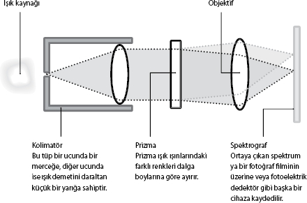

Spektroskop Nasıl Çalışır?
Kimyasal elementler ve bileşikler belli dalga boylarındaki ışığı emerler –ve yayarlar. Bu onların çeşitli elektron yörüngeleri arasındaki enerji boşluklarına bağlıdır. Bir grafiğin bir ekseninde ışık şiddetini, diğerinde dalga boyunu gösterirsek, emilim ve yayılım çukurlar ve tepeler olarak görünür. Oluşan modeller elementin ya da bileşiğin özelliklerini açığa vurur.
Spektroskop gelen ışığı veya başka ışıyan enerjiyi alıp genellikle kırınım yoluyla bir spektruma dağıtır. Spektroskopların tasarımı incelenen şeye göre değişir.
Tipik bir spektroskop şöyle çalışır:
